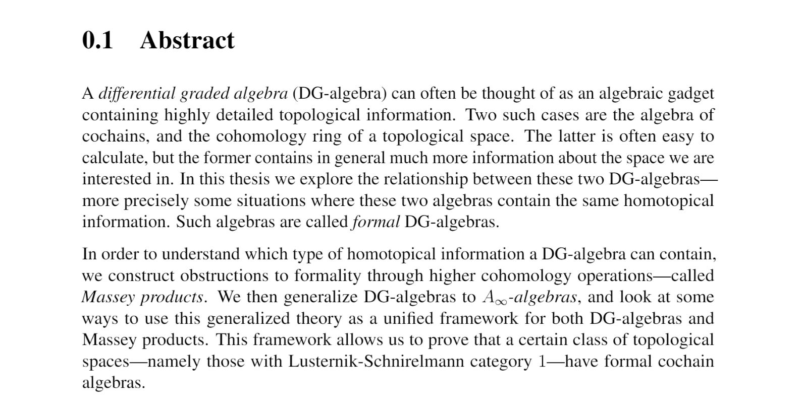
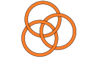
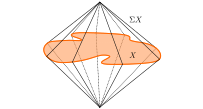

My five years of studying mathematics at NTNU has finally culminated in my master thesis, now handed in and defended. So, I thought I would explain my thesis, and a couple of the interesting pieces. Luckily we have already covered a lot of the background material, so I will rely on that as much as possible in order to not reproduce the thesis in its full details. I have a suspicion that this post will be long enough already… Ok, lets begin.
The idea
To get an idea of what the thesis is about I thought it would be smart to state, unpack and explain the abstract of the thesis. If I have made a good job making the abstract it should summarize the thesis well, and allow us to explore the relevant ideas through it. Ok, lets see the abstract:

Luckily I was smart enough to highlight the four central themes in the thesis by italicizing them. As you can see from those four words, the thesis is about formal DG-algebras, Massey products and $A_\infty$-algebras. These three are intimately linked, as we will hopefully discover throughout this post. In the most rough and short outline possible: DG-algebras are collections of topological information about a topological space, Massey products are higher order data in a DG-algebra and $A_\infty$-algebras are collections of homotopical data about a topological space. Formal DG-algebras will be those without homotopical information, so a sort of easy to understand DG-algebra. It would then be handy to understand which DG-algebras are formal, and which are not. This is the goal of the thesis.
Formal DG-algebras
We have already learned a bit about DG-algebras when we learned about homotopy associativity. There we tried deform a DG-algebra through a homotopy equivalence and see whether the result was still a DG-algebra. It turned out not to be the case as the product was no longer associative, only associative up to a special homotopy, which we later discovered was part of an $A_\infty$-structure. More on this later. Let’s start by recalling the definition.
Definition (DG-algebra): A DG-algebra is a graded vector space $A=\bigoplus A^i$ over a field $k$ together with two operations, $d:A\longrightarrow A$ called the differential and $m:A\otimes A\longrightarrow A$ called multiplication, such that
- $|d|=1, |m|=0$, meaning that $d$ has degree $1$ and $m$ has degree $0$
- $d^2=0$, meaning that $d$ makes $\bigoplus A^i$ into a cochain complex
- $m(m\otimes 1) = m(1\otimes m)$, meaning that $m$ is an associative product
- $dm=m(d\otimes 1)+m(1\otimes d)$, meaning that $d$ is a derivation with respect to $m$
This definition is precisely a structure that unifies cochain complexes and algebras.
The examples one should have in mind, at least for this blog post is the cochain complex of a topological space together with the cup product. Also, the cohomology ring of a topological space together with a differential $d=0$. These are of course intimately linked, as the cohomology ring is the graded vector space we get by taking the homology of the cochain complex with respect to the differential, which we turn into a DG-algebra using the induced cup product and trivial differential. One can also consider the de Rham algebra of a manifold, and many other more fancy examples.
We of course also have morphisms between DG-algebras, such that we get a category of DG-algebras, denoted $DGA_k$. These morphisms are precicely those who preserve both the product and the differential, i.e. structure preserving maps.
Now, we need to understand what a formal DG-algebra is. The abstract states that a formal DG-algebra is a DG-algebra that contain the same homotopical information as its cohomology, so what does this really mean?
In the fibration series we learned about model categories and the homotopy category of model categories. As it turns out, $DGA_k$ admits a model structure. This is done by defining the fibrations to be the degreewise surjective morphisms, the weak equivalences to be the quasi-isomorphisms (the morphisms that induce isomorphisms in cohomology) and the cofibrations being induced from the other two. Its Quillen homotopy category, $HoDGA_k$, is then obtained by localizing at the weak equivalences. The “homotopical” information is stored in this homotopy category, meaning that a formal DG-algebra i.e. one that contains the same homotopical information as its cohomology, should be isomorphic to it in the homotopy category!
Recall that localizing inverts the quasi-isomorphisms, so they become isomorphisms in the homotopy category. Hence, being isomorphic in the homotopy category is the same as being weakly equivalent in $DGA_k$. Two DG-algebras $A, B$ as weakly equivalent if there exists a span of quasi-isomorphisms $A\longleftarrow C\longrightarrow B$ between them. The reason this is not a single quasi-isomorphisms $A\longrightarrow B$, is that quasi-isomorphisms are not in general homotopy-invertible. Thus, a single isomorphism in $HoDGA_k$ does not always come from a single quasi-isomorphism in $DGA_k$. This now defines what we mean by formal DG-algebras, so lets wrap the above discussion up in a nice package.
Definition (Formal DG-algebra): A DG-algebra $A$ is said to be formal if there exists a DG-algebra $C$ forming a span $H(A)\overset{p}\longleftarrow C \overset{q}\longrightarrow A$, where $p$ and $q$ are quasi-isomorphisms.
As we will see in a bit, the cohomology algebra itself does not contain a whole lot of homotopical information, so formal DG-algebras are sort of simple objects, at least in the eyes of homotopy.
Massey products
We said that these formal DG-algebras were the ones that contained the same homotopical information as their cohomology, but we don’t yet know what this homotopical information is, or even what it can be. One example of such information is the Massey products. Intuitively, Massey products detect higher order linking inside the space — we will see a bit better what this means in an example soon. First of, lets define these. We will do this through what is called defining systems.
Definition (Defining system): Let $\bar{x} = (-1)^{|x|}x$. A defining system for a set of cohomology classes $x_1, \ldots, x_n$ in $H(A)$ is a collection ${ a_{i,j}}$ of cochains in $A$ such that
- $[a_{i-1, i}] = x_i$
- $d(a_{i, j}) = \displaystyle\sum_{i<k<j}\overline{a_{i, k}}a_{k, j}$
for all pairs $(i,j)\neq (0,n)$ where $i\leq j$.
Massey products will then be a set where the elements are indexed by the possible defining systems we have available. More precisely we have the following definition.
Definition (Massey $n$-product): The Massey $n$-product of $n$ cohomology classes $x_1, \ldots, x_n$, denoted $\langle x_1, \ldots, x_n\rangle$, is defined to be the set of all $[a_{0,n}]$, where
$$a_{0,n} = \sum_{0<k<n}\overline{a_{0, k}}a_{k, n}$$
such that ${ a_{i,j} }$ is a defining system.
We see that the Massey product is not a single element, which we might suspect when we hear the word “product”, but a set of possible different “products”. Let us write out in a bit more detail how the Massey $n$-product might look for some small $n$.
$\mathbf{n=2}:$ Assume we have two cohomology classes $x_1$ and $x_2$ and a defining system ${a_{i,j} }$. The defining system will just be ${ a_{0,1}, a_{1,2}}$ such that $[a_{0,1}]=x_1$ and $[a_{1,2}] = x_2$. The element in the Massey product — given by the defining system — is then $[a_{0,2}]$, where $a_{0, 2} = \overline{a_{0, 1}}a_{1, 2}$. This is just the cohomology class of the product in the DG-algebra up to a sign. Hence Massey $2$-products are already familiar as the induced product on the cohomology of a DG-algebra!
$\mathbf{n=3}:$ Let now $x_1, x_2, x_3$ be three cohomology classes and ${a_{i,j}}$ a defining system for them. The system will consist of $a_{0,1}$, $a_{1,2}$, $a_{2,3}$, $a_{0,2}$ and $a_{1,3}$ such that
- $[a_{0,1}] = x_1$
- $[a_{1,2}] = x_2$
- $[a_{2,3}] = x_3$
- $d(a_{0,2}) = \overline{a_{0,1}} a_{1,2}$
- $d(a_{1,3}) = \overline{a_{1,2}} a_{2,3}$
This means that the element in the Massey product $\langle x_1, x_2, x_3 \rangle$ defined by the defining system above is given by $[a_{0,3}]$, where
$$a_{0,3} = \overline{a_{0, 1}}a_{1, 3} + \overline{a_{0, 2}}a_{2, 3}.$$
For those who have seen Massey products before, this is the same as the classical triple Massey product, just neatly packaged using the defining systems.
$\mathbf{n=4}:$ Let $x_1$, $x_2$, $x_3$, $x_4$ be cohomology classes and ${ a_{i,j} }$ be a defining system for them. It consists of nine elements $a_{0,1}$, $a_{1,2}$, $a_{2,3}$, $a_{3,4}$, $a_{0,2}$, $a_{1,3}$, $a_{2,4}$, $a_{0,3}$, $a_{1,4}$ such that
- $[a_{0,1}] = x_1$
- $[a_{1,2}] = x_2$
- $[a_{2,3}] = x_3$
- $[a_{3,4}] = x_4$
- $d(a_{0,2}) = \overline{a_{0,1}} a_{1,2}$
- $d(a_{1,3}) = \overline{a_{1,2}} a_{2,3}$
- $d(a_{2,4}) = \overline{a_{2,3}} a_{3,4}$
- $d(a_{0,3}) = \overline{a_{0,1}} a_{1,3}+\overline{a_{0,2}}a_{2,3}$
- $d(a_{1,4}) = \overline{a_{1,2}} a_{2,4}+\overline{a_{1,3}}a_{3,4}$
This makes the element in $\langle x_1, x_2, x_3, x_4\rangle$ defined by the defining system ${a_{i,j}}$ equal to $[a_{0,4}]$, where
$$a_{0,4} = \overline{a_{0,1}}a_{1,4} + \overline{a_{0,2}}a_{2,4} + \overline{a_{0,3}}a_{3,4}.$$
When we mention Massey products during the rest of this post we mean Massey $n$-products for $n\geq 3$ — for precisely this reason that Massey $2$-products are just given by induced multiplication. When we say “all Massey products” we will mean all Massey $n$-products, for all $n\geq 3$.
The guiding example for Massey products have and will most likely always use the Borromean rings. In order to keep this short I am brushing some detail under the rug, but the intuition should hopefully shine through. The Borroman rings is the following space:

In order to prove that these three rings can not be pulled apart we need the Massey $3$-product. The $1$-cochains can be represented by loops going around the three different rings, call these $x$, $y$, $z$. The cup-product of the cohomology classes of two such chains, for example $[x]$ and $[y]$, will contain their linking number as a factor, which means $[x]\cup [y] = 0$ as any two rings are not linked. As the cup product is trivial in cohomology, it means that the product in the cochain DG-algebra is in the image of the differential, hence there exists $a$ such that $d(a) = x\cup y$. The same goes for the other products, and we an element $b$ such that $d(b)=y\cup z$. This means that we have a defining system $x, y, z, a, b$, which creates a non-trivial Massey $3$-product $\langle x, y, z \rangle$.
So, can we use these Massey products in order to understand formal DG-algebras? Yes, or at least kind of. Two things can be shown:
- The cohomology algebra of any DG-algebra has only “vanishing” Massey products. As the Massey products are sets — not only one element in general — being vanishing means that this set contains the zero class. This is the analogue of a product being trivial, i.e. being equal to zero.
- Massey products are preserved under quasi-isomorphisms. Meaning that the Massey product sets of two quasi-isomorphic DG-algebras are isomorphic.
Hence, formal DG-algebras — as they are quasi-isomorphic to their cohomology — can only contain vanishing Massey products! This means that if we find any non-vanishing Massey product in a DG-algebra, it cant be formal, i.e. Massey products are obstructions to formality.
This is good. We now have a test for recognizing non-formal DG-algebras, but is this also a test for recognizing the formal ones? Or reformulated, are Massey products the only obstructions to formality? If this was the case, checking all Massey products would be a definite proof that the DG-algebra is formal. Unfortunately, this is not the case. Massey products can sort of vanish for different reasons making it possible to have certain Massey products containing zero, but not being the homotopical information we would expect. So, we need some kind of new way of figuring out when the Massey products all vanish for the same reason, sometimes stated as being “uniformly vanishing”. This leads us to some homotopical structures we have already seen quite a bit of.
$A_\infty$-algebras
In order for this post not to be as long as the thesis it self we will mostly outsource the information on $A_\infty$-algebras to the 4 posts we have already made on them (1, 2, 3, 4, where number 4 is the most important for this post). We will however recall the definition, and connect it to the above story on homotopical information in DG-algebras.
**Definition ($A_\infty$-algebra):** An $A_\infty$-algebra $(A, m)$ is a graded vector space $A = \bigoplus_{i\in \mathbb{Z}} A^i$ together with a family of morphisms $m={m_n}$ consisting of maps $m_n\colon A^{\otimes n}\longrightarrow A$ of degree $2-n$ such that
$$\displaystyle\sum_{r+s+t=n}(-1)^{r+st}m_{r+1+t}(id^{\otimes r}\otimes m_s \otimes id^{\otimes t}) = 0$$
for all $n, s\geq 1$ and $r, t\geq 0$.
These relations are often called the Stasheff identities or the coherence relations in $A$. We won’t recall them in detail here, as it would take a bit of time and is not so important for the story we are telling in this post, but to be brief: The first Stasheff identity makes $A$ into a cochain complex; the second one states that the product $m_2$ is a derivation with respect to $m_1$, i.e. it satisfies the Leibniz rule; the third states that $m_2$ is associative up to homotopy. To see some more detail on this, see post 4.
As with DG-algebras we also have morphisms between $A_\infty$-algebras such that we get a category $\infty Alg_k$. These maps are not structure preserving, but are structure preserving up to homotopy. This is because the structure itself is homotopical, so this notion of morphisms is more fitting. What these maps are precisely is not that important for us here. The important part is that there are morphisms, and even more importantly, that there are $A_\infty$-quasi-isomorphisms. As $m_1$ acts as a differential we can define the cohomology of an $A_\infty$-algebra in exactly the same way as usual. This ables us to again define $A_\infty$-quasi-isomorphisms as those who induce isomorphisms in cohomology.
The whole reason we introduce $A_\infty$-algebras in order to study DG-algebras is the following theorem.
Kadeishvili’s theorem: Let $A$ be a DG-algebra and $H(A)$ its cohomology. There exists an $A_\infty$-structure ${m_i}$ on $H(A)$ such that $A$ and $H(A)$ are related by an $A_\infty$-quasi-isomorphism $H(A)\rightsquigarrow A$.
In post 3 about $A_\infty$-algebras we constructed such an $A_\infty$-structure by deforming a DG-algebra through a homotopy equivalence. The above theorem can be proven by constructing such a deformation retraction from $A$ onto $H(A)$.
So, this means that not every DG-algebra is formal, i.e. quasi-isomorphic to its cohomology, but, with the added $A_\infty$-structure on $H(A)$ it is in fact $A_\infty$-quasi-isomorphic! Intuitively, we have now created a homotopical structure on $H(A)$ that tells us all relevant homotopical information about $A$. What we mean by this is that passing from DG-algebras to $A_\infty$-algebras does not create more homotopy types, just showcases the relevant information more explicitly, or in a different way. This means that two DG-algebras $A$ and $B$ are DG-quasi-isomorphic if and only if they are $A_\infty$-quasi-isomorphic. For us this is really important, as we get the following result.
Theorem: Let $A$ be a DG-algebra and $H(A)$ its cohomology $A_\infty$-algebra. Then $A$ is formal if and only in $m_i=0$ for all $i\geq 3$, i.e. $H(A)$ is a DG-algebra.
This is the ultimate conclusion about formality in the thesis, as we have a clear cut way to figure out if something is formal or not. The operations $m_i$ are inductively defined, so all we need to do is check that these product are all trivial in order to have a definite proof that a DG-algebra $A$ is formal. This was the goal of the thesis after all, to understand formality, or equivalently, when a DG-algebra contains the same homotopical information as its cohomology.
These products behave a lot like the Massey products we discussed earlier, but there are some differences, i.e. the $m_n$’s does not always create elements in the Massey $n$-products, but when $m_n=0$ for all $n\geq 3$ we know that $A$ is formal, and hence that all the Massey products are vanishing. This is the idea behind “uniform” vanishing of the Massey products, and this in fact shows (by definition almost) that having uniformely vanishing Massey products means that $A$ is formal. Intuitively it means that we can cherrypick the zero-class from all the Massey products, and that this choice neatly settles into a trivial $A_\infty$-structure.
Further results and LS-cat 1 spaces
So, the goal of the thesis is reached as we have a way of checking whether a DG-algebra is formal or not. But, after finishing up the above story I had a sort of uneasy feeling. I felt we did not use the Massey products enough in the end result. We abstracted away from them, and in a not entirely perfect way.. So, is there a way to more nicely fuse the Massey products, the $A_\infty$-structure and formality? It turns out that this is possible, at least in a special case.
Theorem: Let $A$ be a DG-algebra. If the induced product on $H(A)$ is trivial, and all Massey products are vanishing, then $A$ is formal.
This result falls out as a corollary to the following paper, showing exactly the failures of the $A_\infty$-structure on $H(A)$ to recover the Massey products. What I found interesting about this result is that it serves as another test of formality, and the last part of my thesis is spent on using the above result to show formality of certain DG-algebras in a new way. These algebras are the cochain algebras of some interesting topological spaces that I had never encountered before, called the Lusternik-Schnirelman category 1 spaces. We will not go into details about these spaces here, but to be brief they are spaces that can be covered by two contractible subsets. An example is the suspension of any path connected topological space, as it can be covered by two cones, each contractible.

This makes it so that the induced cup product on their cohomology algebras have trivial product — exactly what we need to use our above theorem. It turns out that these spaces also have only vanishing Massey products, hence their cochain algebras must be formal DG-algebras!
So, this is my thesis summarized — or at least the abstract somewhat explained. I tried my best to make the thesis approachable and easy to read, so any one interested is welcome to have a look at it. It can be found here).